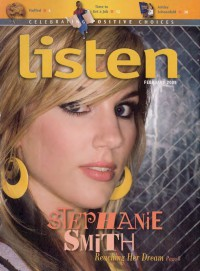

CMnexus
:
Contemporary Christian culture, music, and media.
Magazines
Profiles
Dove Awards
cmnexus.org
CM
nexus
→
Profiles
→
S
Stephanie Smith
On the cover

February 2009
Listen
Media coverage
Jun 2008 in
Ignite Your Faith
"Freed by Forgiveness", by
Elisabeth Freeman
Jan 2009 in
Group
"The Rip Out: Ministry and Media: Stephanie Smith", by
Scott Firestone IV
Feb 2009 in
Listen
"Reaching Her Dream-The Right Way"
Albums & reviews:
2008:
Not Afraid
May 2008 in
Christian Single
, by
Andy Argyrakis
May 2008 in
Living With Teenagers
, by
Joy Fisher
Aug 2008 in
Living With Teenagers
, by
Randy Williams
2009:
Stephanie Smith EP
CMnexus
(noun)
The magazine index
of modern music
and Christianity
© 2011 CMnexus. Last updated August 2025.
Contact:
Rants and other correspondence to:
editor -AT- cmnexus
-DØT- org
About